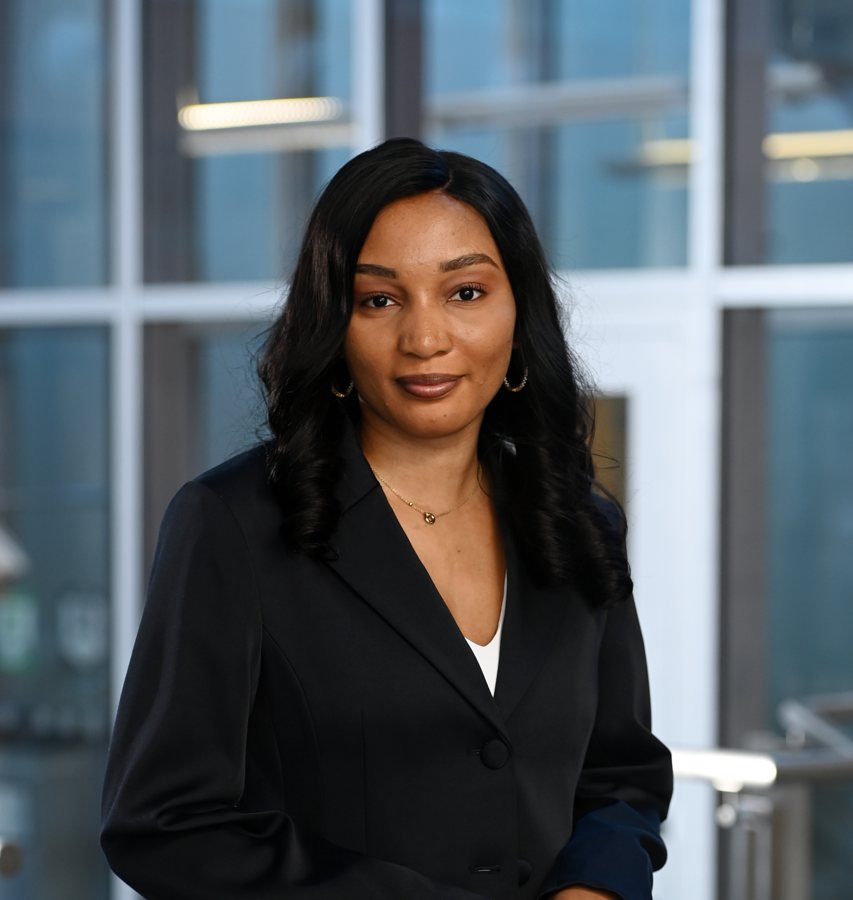
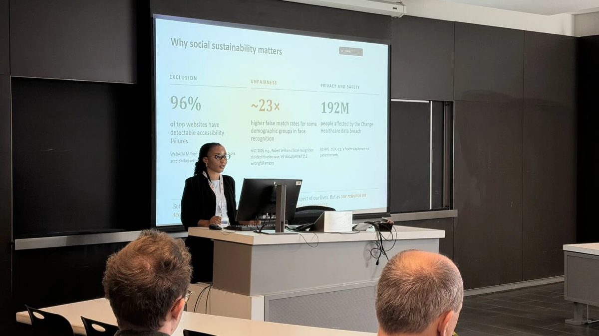
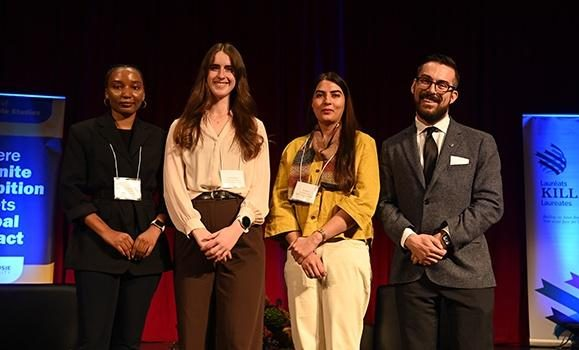

I finished my PhD
Four years and four experiments later, I completed my PhD in Computer Science at Dalhousie University. Thesis: Advancing Social Sustainability in Software Engineering Through Evidence-Based Interventions.
I study how the software we build affects the people who use it, and what developers can do to make it fairer and safer.
I just finished my PhD in Computer Science at Dalhousie University, where I worked with Paul Ralph. Most of my research puts developers into experiments and asks a simple question. If we give them a better tool or a little training, do they make choices that hurt fewer people? In our studies, personas and short training both helped.
These days I also work on AI. At Alignerr by Labelbox, I give AI coding agents real tasks in real codebases and look for where they go wrong. Before grad school, I spent seven years shipping software in fintech, health and education. That time taught me to care about whether research holds up in practice.

Four years and four experiments later, I completed my PhD in Computer Science at Dalhousie University. Thesis: Advancing Social Sustainability in Software Engineering Through Evidence-Based Interventions.
I joined Alignerr by Labelbox as a Senior Software Engineer. My job is to test AI coding agents on real software tasks and find out where they break.
Social sustainability is one of the least studied parts of sustainability in software engineering. Our roadmap sets out how the field can define it more clearly, measure it better and test what actually helps. I wrote it with Anielle Andrade, Ronnie de Souza Santos and Paul Ralph. The best part was the conversations afterward.


Our SPAR team paper on how to design and report randomized controlled trials in AI evaluation was accepted at the ICML 2026 Workshop on Technical AI Governance Research.
I helped develop the proposal and research design for an NSERC Discovery Grant led by Professor Paul Ralph. The grant was awarded.
I was selected for the Fall 2025 Supervised Program for Alignment Research. I worked with an international team on methods for AI evaluation studies.
As a Killam scholar, I was invited to present my research at Dalhousie's annual Killam Celebration. I talked about how we can get developers to think about who their software might hurt.
Read the Dal News story
I presented our paper showing that user personas lead developers to push harmful features down their priority list. I also joined a panel on testing for sustainability and chaired a session at AST 2025.

Digital Nova Scotia invited me to lead a Python and chatbot workshop for young people at the Discovery Centre in Halifax.
I competed in the Dalhousie Three-Minute Thesis competition with a talk on the social costs of our digital world.
I was one of 16 Dalhousie doctoral students selected for OpenThink training in policy and media writing. I also attended the ComSciCon Flagship science communication workshop.
I presented our theory paper, Sustainability is Stratified, and a doctoral symposium poster on stakeholder mapping and personas.
Software decides who gets a loan, who sees a job ad and whose face a camera recognizes. Those outcomes start with ordinary decisions developers make every day, like which feature to build first. I study those decisions, and I test small changes that lead to better ones. Researchers call this social sustainability: how software affects equity, inclusion and well-being.
I test simple tools, like user personas and stakeholder maps, that help developers notice who might get hurt by a feature.
AI coding agents now write a lot of software. I want to know how harm slips into their code, and how well developers catch it when they review it.
Good answers need good experiments. I work on methods for testing these ideas, including guidelines for randomized trials in AI evaluation.
I design evaluation tasks and grading criteria for AI coding agents that work on multi-step tasks in real codebases. I judge their output for correctness, reliability, code quality, instruction compliance and safety.
I led a four-year research program on social sustainability in software engineering, from ethics approval to statistical analysis and publication. I brought in industry partners so that professional engineers took part in the experiments.
I worked with an international team on problems in the design and reporting of AI evaluation studies. We wrote guidelines for randomized controlled trials in AI evaluation.
I added AI features to an enterprise strategy management platform and managed product requirements.
I designed surveys and interviews, coordinated data collection across institutions, and analyzed data on the barriers Black students face in STEM education and careers in Nova Scotia.
I led software projects in fintech, health and education from requirements to deployment. I built backend services, APIs and databases with Agile teams and mentored junior developers.
If you work on responsible AI, human-centred software or AI evaluation, I would love to hear from you. I am always up for a collaboration, a talk or a good conversation.